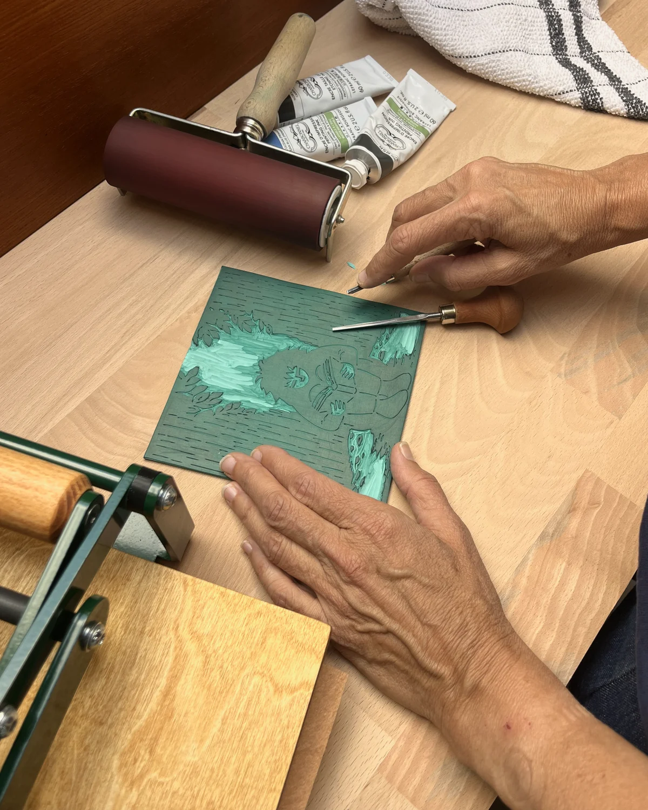
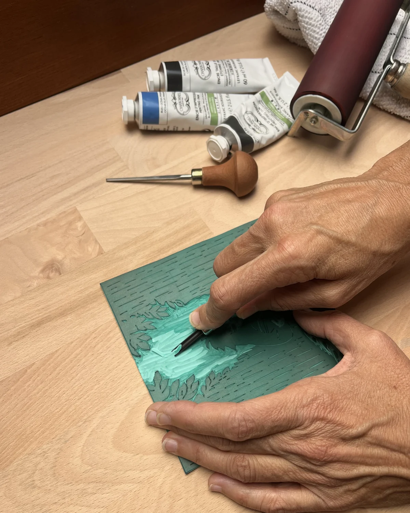
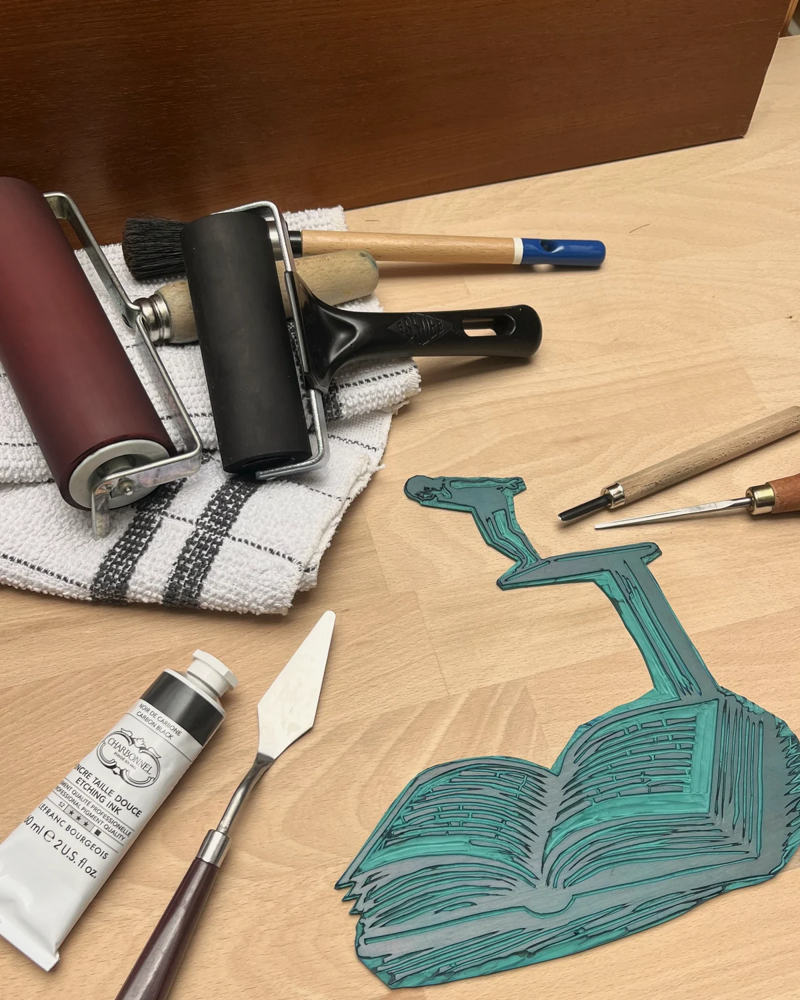
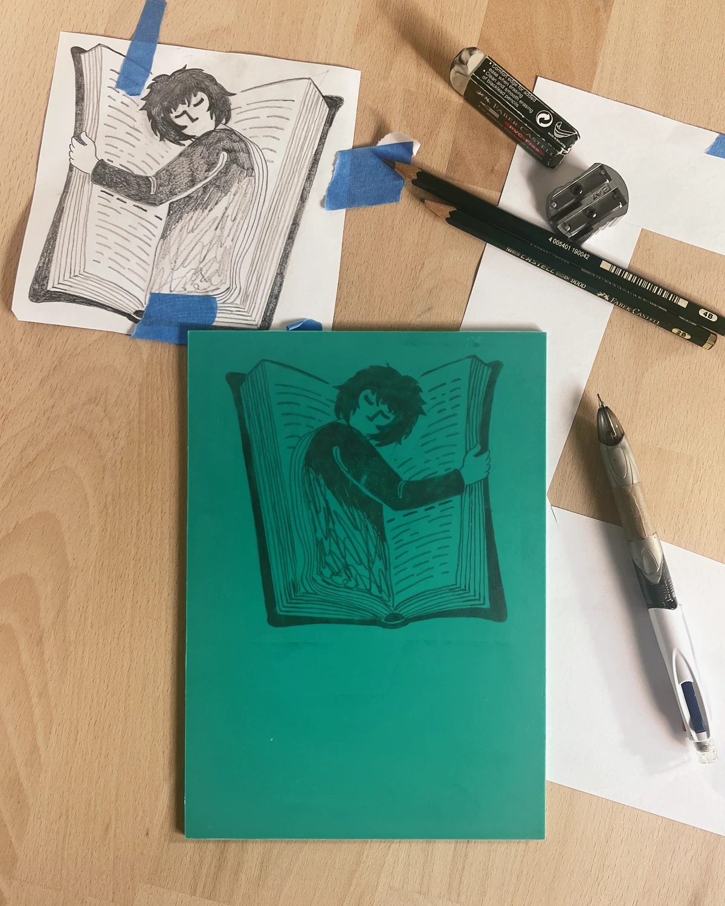
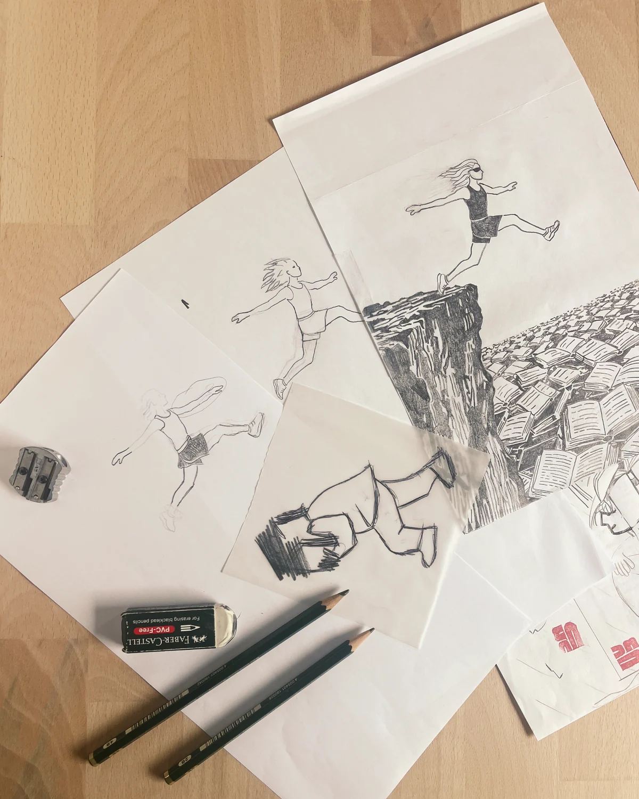
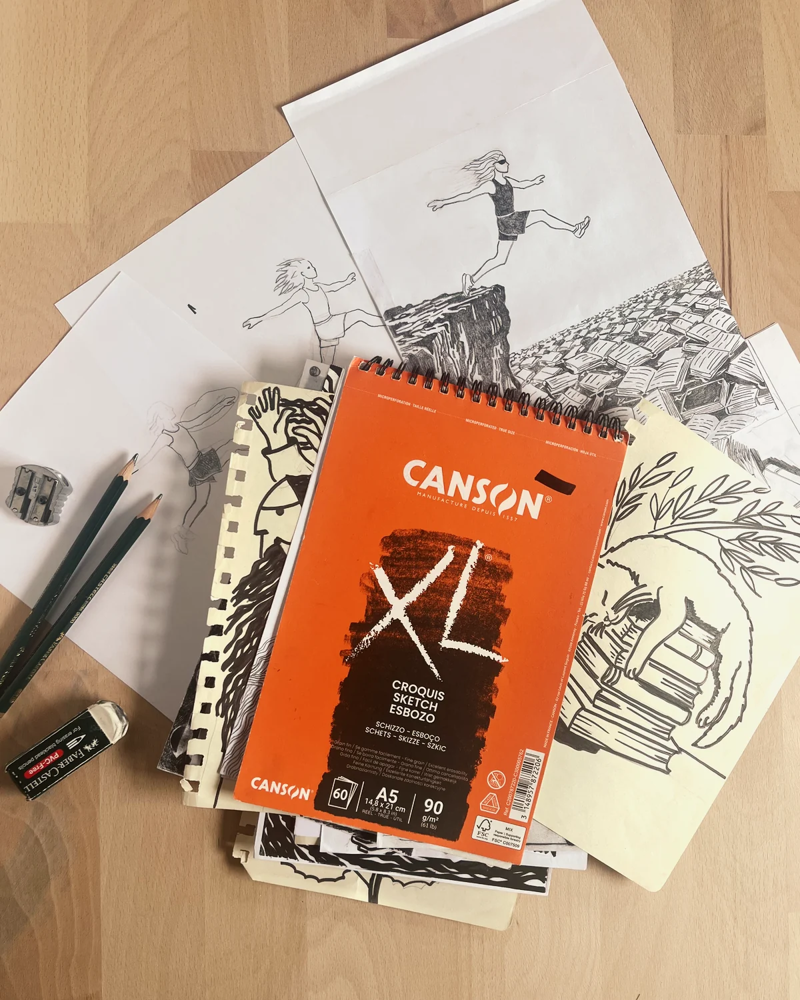

Estampes
-

Vertige de lire
Plongeons
Tirage numéroté
-

Lisons, la pluie se tait
II
-

Ronron
Dormons, les livres ronronnent
-

Au creux d'un livre
I
-

Vertige de lire
Grimpons
Tirage numéroté
-

Lisons, la pluie se tait
V
-

Ronron
Viens !
Tirage numéroté
-

Entrons
Entrons, la pluie murmure
-

-

-

-

-

-

À propos
Marcelle et le Vent répond à l'alliance entre deux passions, l'une pour le dessin, l'autre pour la littérature.
Petit atelier basé dans le Sud de la France, Marcelle et le Vent propose des illustrations obtenues par linogravure.
Le procédé consiste à reporter un dessin sur une plaque de linoléum (ou de gomme), laquelle est ensuite gravée. Cette matrice est alors encrée puis pressée sur du papier. Ces impressions sont appelées estampes.
Chaque impression revêt un caractère unique et révèle des variations qui lui sont propres.
Les dessins sont imaginés et réalisés par Barbara B. ; elle grave les plaques et imprime elle-même. Le procédé est donc entièrement artisanal.
Contact
Pour toute demande particulière, n'hésitez pas à me contacter par e-mail.
- Boutique Etsy — bientôt
- Également sur Vinted
- Instagram Instagram
- E-mail marcelleetlevent@gmail.com